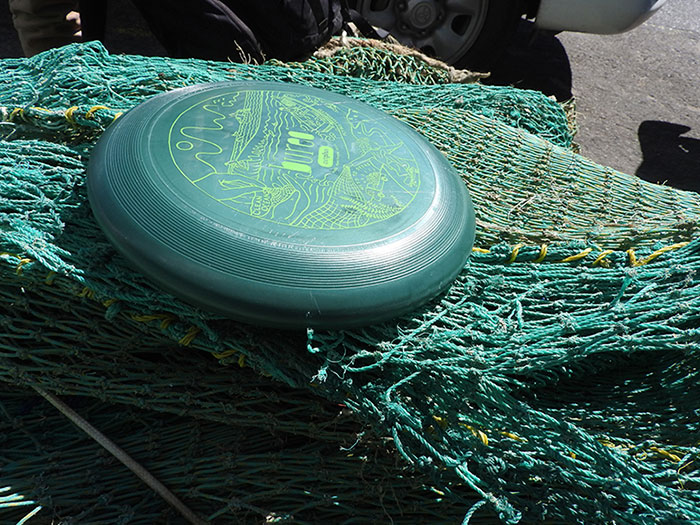

Net Positiva es una plataforma pionera que aborda el problema de los desechos plásticos mediante un enfoque integrador y sostenible. Esta iniciativa conecta a comunidades locales con empresas y organizaciones comprometidas con el reciclaje, facilitando la recolección y transformación de plásticos en nuevos productos útiles.
Procesos
El proceso comienza con la recolección de residuos plásticos en áreas costeras y urbanas, donde las comunidades locales juegan un papel central. A través de programas de capacitación y equipamiento, los participantes no solo ayudan a limpiar sus entornos, sino que también adquieren habilidades valiosas que pueden traducirse en oportunidades económicas.
Una vez recolectados, los plásticos son procesados y convertidos en productos como envases, materiales de construcción, o incluso accesorios de moda. Este ciclo no solo contribuye a la reducción de residuos y la conservación del medio ambiente, sino que también impulsa el desarrollo económico de las comunidades involucradas.
Marcando diferencias
Net Positiva demuestra que la economía circular no es solo una posibilidad, sino una realidad en la que todos podemos participar. Con un enfoque en la colaboración y el impacto positivo, esta iniciativa está marcando una diferencia tangible en la lucha contra la contaminación por plásticos, al tiempo que genera beneficios sociales y económicos duraderos.
Al final, Net Positiva es más que un proyecto de reciclaje; es un modelo de cómo podemos reimaginar la relación entre la sociedad y los recursos naturales, creando un futuro más limpio y equitativo para todos.